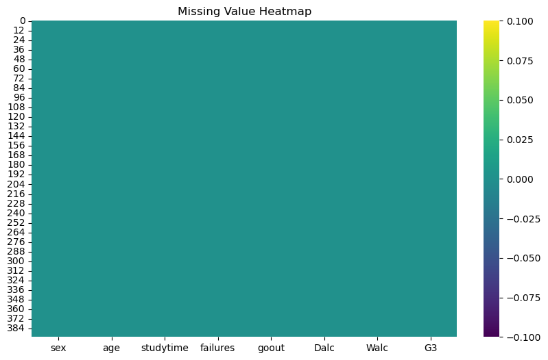
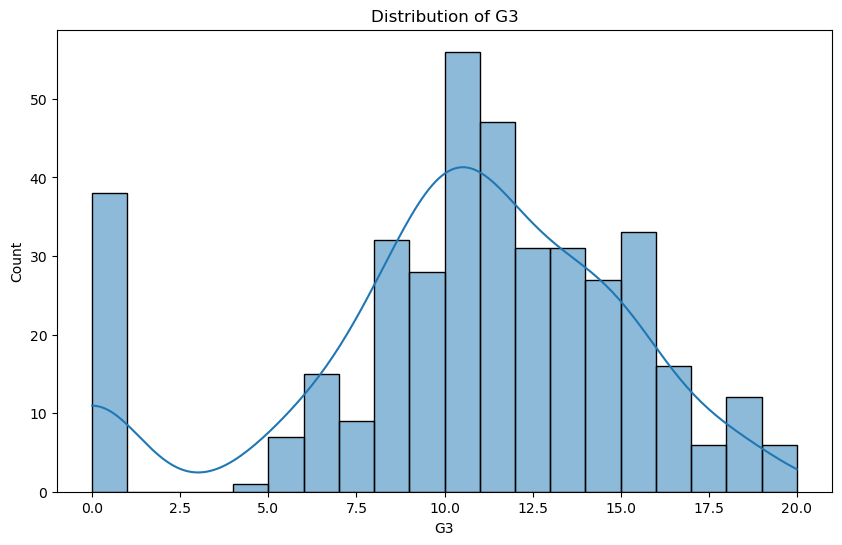
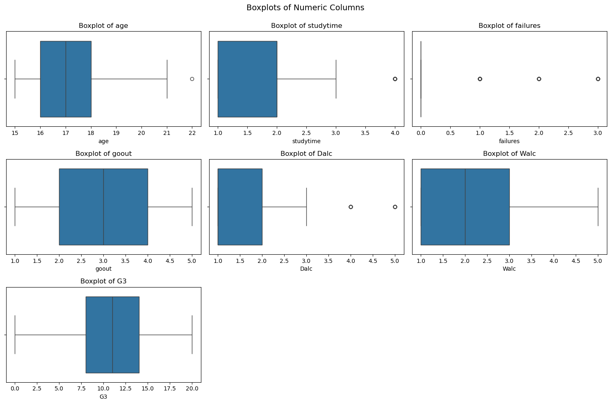
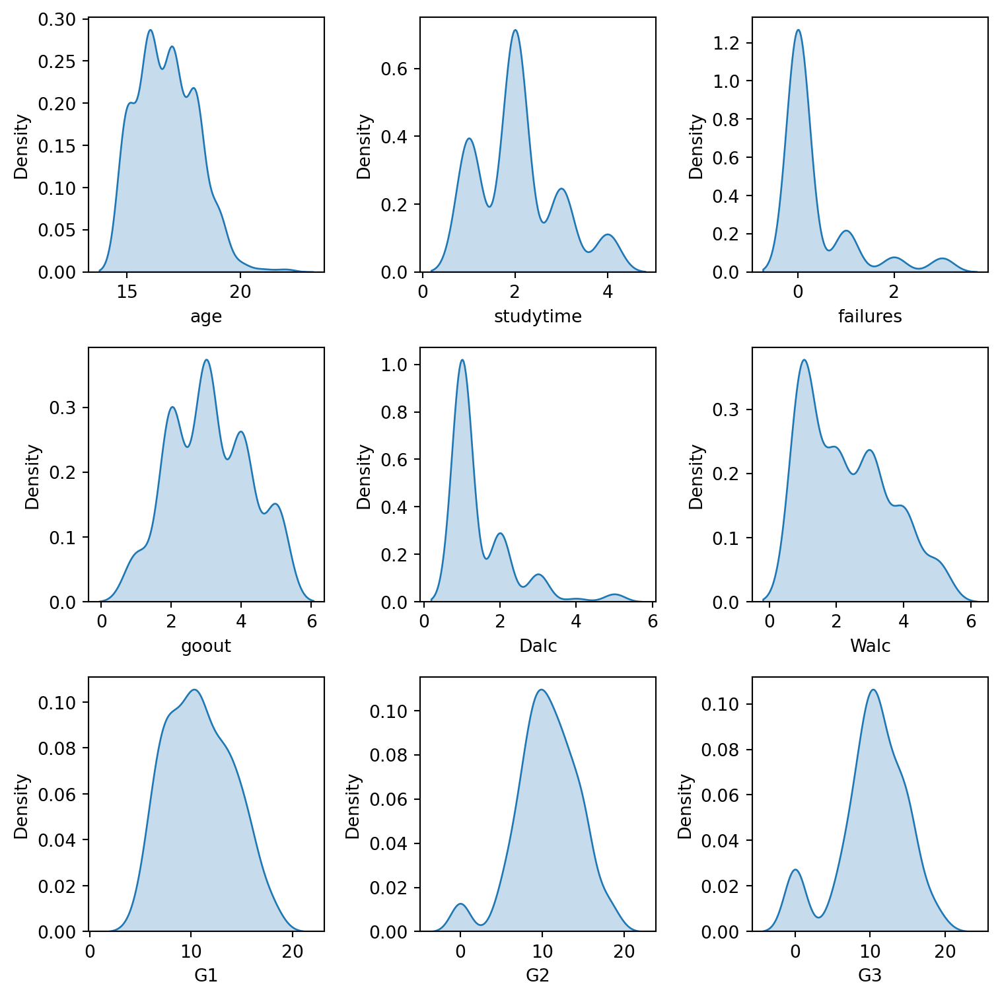
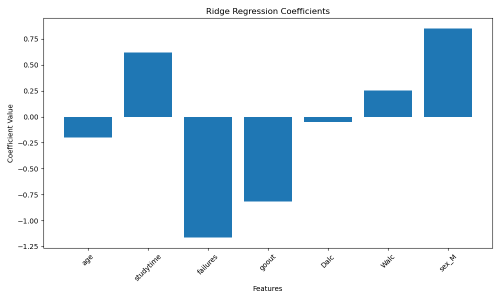

student_performance = pd.read_csv(Path('../data/raw/student-mat.csv'), sep=';')Predicting academic performance using demographic and behavioral Data
1 Summary
This project investigates whether a student’s mathematics performance can be predicted using demographic and behavioral data, aiming to help educators in supporting students and tailoring educational strategies. Using a Ridge Regression model with optimized hyperparameters (alpha = 1), we achieved a strong predictive accuracy with a cross-validation score of 0.81 and evaluation metrics on the test set including an MSE of 4.048, RMSE of 2.012, and MAE of 1.309. While the model demonstrates robust performance, future work could explore non-linear models and provide confidence intervals for predictions to enhance interpretability and reliability, ultimately contributing to better educational outcomes.
2 Introduction
Math teaches us to think logically and it also provides us with analytical and problem-solving skills. These skills can be applied to various academic and professional fields. However, student performance in mathematics can be influenced by many factors, like individual factor, social factor, and family factor. Research has shown that attributes such as study habits, age, social behaviour (alcohol consumptions, etc) and family background can significantly impact a student’s academic success. Understanding these factors is crucial for improving educational outcomes. (Bitrus, Apagu, and Hamsatu (2016), Hjarnaa et al. (2023), Modi (2023))
In this study, we aim to address this question: “Can we predict a student’s math academic performance based on the demographic and behavioral data?”. Answering this question is important because understanding the factors behind student performance can help teachers provide support to struggling students. Furthermore, the ability to predict academic performance could assist schools in developing educational strategies based on different backgrounds of students. The goal of this study is to develop a machine learning model capable of predicting student’s math performance with high accuracy.
The dataset (Cortez (2008)) used in this study contains detailed records of student demographics and behaviors, such as age, study habits, social behaviors, and family background. The target variable, mathematics performance, is measured as a continuous score reflecting students’ final grade. This dataset offers a great opportunity to explore meaningful relationships between features and academic outcomes.
3 Methods & Results
The objective here to prepare the data for our classification analysis by exploring relevant features and summarizing key insights through data wrangling and visualization.
3.1 Dataset Description
The full data set contains the following columns:
school- student’s school (binary: ‘GP’ - Gabriel Pereira or ‘MS’ - Mousinho da Silveira)sex- student’s sex (binary: ‘F’ - female or ‘M’ - male)age- student’s age (numeric: from 15 to 22)address- student’s home address type (binary: ‘U’ - urban or ‘R’ - rural)famsize- family size (binary: ‘LE3’ - less or equal to 3 or ‘GT3’ - greater than 3)Pstatus- parent’s cohabitation status (binary: ‘T’ - living together or ‘A’ - apart)Medu- mother’s education (numeric: 0 - none, 1 - primary education (4th grade), 2 - “ 5th to 9th grade, 3 - “ secondary education or 4 - “ higher education)Fedu- father’s education (numeric: 0 - none, 1 - primary education (4th grade), 2 - “ 5th to 9th grade, 3 - “ secondary education or 4 - “ higher education)Mjob- mother’s job (nominal: ‘teacher’, ‘health’ care related, civil ‘services’ (e.g. administrative or police), ‘at_home’ or ‘other’)Fjob- father’s job (nominal: ‘teacher’, ‘health’ care related, civil ‘services’ (e.g. administrative or police), ‘at_home’ or ‘other’)reason- reason to choose this school (nominal: close to ‘home’, school ‘reputation’, ‘course’ preference or ‘other’)guardian- student’s guardian (nominal: ‘mother’, ‘father’ or ‘other’)traveltime- home to school travel time (numeric: 1 - <15 min., 2 - 15 to 30 min., 3 - 30 min. to 1 hour, or 4 - >1 hour)studytime- weekly study time (numeric: 1 - <2 hours, 2 - 2 to 5 hours, 3 - 5 to 10 hours, or 4 - >10 hours)failures- number of past class failures (numeric: n if 1<=n<3, else 4)schoolsup- extra educational support (binary: yes or no)- famsup` - family educational support (binary: yes or no)
paid- extra paid classes within the course subject (Math or Portuguese) (binary: yes or no)activities- extra-curricular activities (binary: yes or no)nursery- attended nursery school (binary: yes or no)higher- wants to take higher education (binary: yes or no)internet- Internet access at home (binary: yes or no)romantic- with a romantic relationship (binary: yes or no)famrel- quality of family relationships (numeric: from 1 - very bad to 5 - excellent)freetime- free time after school (numeric: from 1 - very low to 5 - very high)goout- going out with friends (numeric: from 1 - very low to 5 - very high)Dalc- workday alcohol consumption (numeric: from 1 - very low to 5 - very high)Walc- weekend alcohol consumption (numeric: from 1 - very low to 5 - very high)health- current health status (numeric: from 1 - very bad to 5 - very good)absences- number of school absences (numeric: from 0 to 93)
These columns represent the grades:
- G1 - first period grade (numeric: from 0 to 20)
- G2 - second period grade (numeric: from 0 to 20)
- G3 - final grade (numeric: from 0 to 20, output target)
Attribution: The dataset variable description is copied as original from the UCI Machine Learning Repository.
3.2 Data Loading, Wrangling and Summary
Let’s start by loading the data and have an initial view of data set structure.
The file is a .csv file with ; as delimiter. Let’s use pandasto read it in.
This provides an overview of the data set with 33 columns, each representing student attributes such as age, gender, study time, grades, and parental details.
Let’s get some information on the data set to better understand it.
student_performance.head()| school | sex | age | address | famsize | Pstatus | Medu | Fedu | Mjob | Fjob | ... | famrel | freetime | goout | Dalc | Walc | health | absences | G1 | G2 | G3 | |
|---|---|---|---|---|---|---|---|---|---|---|---|---|---|---|---|---|---|---|---|---|---|
| 0 | GP | F | 18 | U | GT3 | A | 4 | 4 | at_home | teacher | ... | 4 | 3 | 4 | 1 | 1 | 3 | 6 | 5 | 6 | 6 |
| 1 | GP | F | 17 | U | GT3 | T | 1 | 1 | at_home | other | ... | 5 | 3 | 3 | 1 | 1 | 3 | 4 | 5 | 5 | 6 |
| 2 | GP | F | 15 | U | LE3 | T | 1 | 1 | at_home | other | ... | 4 | 3 | 2 | 2 | 3 | 3 | 10 | 7 | 8 | 10 |
| 3 | GP | F | 15 | U | GT3 | T | 4 | 2 | health | services | ... | 3 | 2 | 2 | 1 | 1 | 5 | 2 | 15 | 14 | 15 |
| 4 | GP | F | 16 | U | GT3 | T | 3 | 3 | other | other | ... | 4 | 3 | 2 | 1 | 2 | 5 | 4 | 6 | 10 | 10 |
5 rows × 33 columns
student_performance.info()<class 'pandas.core.frame.DataFrame'>
RangeIndex: 395 entries, 0 to 394
Data columns (total 33 columns):
# Column Non-Null Count Dtype
--- ------ -------------- -----
0 school 395 non-null object
1 sex 395 non-null object
2 age 395 non-null int64
3 address 395 non-null object
4 famsize 395 non-null object
5 Pstatus 395 non-null object
6 Medu 395 non-null int64
7 Fedu 395 non-null int64
8 Mjob 395 non-null object
9 Fjob 395 non-null object
10 reason 395 non-null object
11 guardian 395 non-null object
12 traveltime 395 non-null int64
13 studytime 395 non-null int64
14 failures 395 non-null int64
15 schoolsup 395 non-null object
16 famsup 395 non-null object
17 paid 395 non-null object
18 activities 395 non-null object
19 nursery 395 non-null object
20 higher 395 non-null object
21 internet 395 non-null object
22 romantic 395 non-null object
23 famrel 395 non-null int64
24 freetime 395 non-null int64
25 goout 395 non-null int64
26 Dalc 395 non-null int64
27 Walc 395 non-null int64
28 health 395 non-null int64
29 absences 395 non-null int64
30 G1 395 non-null int64
31 G2 395 non-null int64
32 G3 395 non-null int64
dtypes: int64(16), object(17)
memory usage: 102.0+ KBThe data set contains 395 observations and 33 columns covering different aspects of student demographics, academic and behavioral traits.
We can see that there is no missing values. There is not need to handle NAs.
The data set includes categorical (school, sex, Mjob) and numerical (age, G1, G2, G3) features.
There is a large range of features but not all of them are necessary for this analysis. Let’s proceed and select only the necessary ones.
Let’s selected the following key columns:
- Demographic attributes: sex, age
- Academic Attributes: studytime, failures, G1, G2, G3 (grades for three terms)
- Behavioral Attributes: goout (socializing), Dalc (weekday alcohol consumption), Walc (weekend alcohol consumption)
We will also split the dataset into train and test set with a 80/20 ratio. We also set random_state=123 for reproducibility.
# Necessary columns
columns = ['sex',
'age',
'studytime',
'failures',
'goout',
'Dalc',
'Walc',
'G1',
'G2',
'G3']
subset_df = student_performance[columns]
train_df, test_df = train_test_split(
subset_df, test_size=0.2, random_state=123
)3.2.1 Data Validation Checks
From heatmap shown in Figure 1, we observe no missing values, suggesting the dataset is entirely complete.

The histogram in Figure 2 visualizes the spread of the target variable. This distribution is critical to understanding how the target behaves and whether any transformations are needed to ensure better model performance.

3.2.2 Checking for Outliers
There are few outliers in failures, Dalc, age, studytime, G2, and G1, as shown in Figure 3. These outliers are relatively few compared to the 395 entries, but could still influence model results. We will apply a StandardScaler transformation to the numeric variables, the effect of these outliers will be minimized. Therefore, we will not drop or modify these outliers at this step.

train_df.head()| sex | age | studytime | failures | goout | Dalc | Walc | G1 | G2 | G3 | |
|---|---|---|---|---|---|---|---|---|---|---|
| 288 | M | 18 | 3 | 0 | 4 | 1 | 3 | 15 | 14 | 14 |
| 6 | M | 16 | 2 | 0 | 4 | 1 | 1 | 12 | 12 | 11 |
| 226 | F | 17 | 2 | 0 | 4 | 1 | 3 | 16 | 15 | 15 |
| 319 | F | 18 | 2 | 0 | 4 | 3 | 3 | 11 | 11 | 11 |
| 216 | F | 17 | 2 | 2 | 5 | 2 | 4 | 6 | 6 | 4 |
train_df.info()<class 'pandas.core.frame.DataFrame'>
Index: 316 entries, 288 to 365
Data columns (total 10 columns):
# Column Non-Null Count Dtype
--- ------ -------------- -----
0 sex 316 non-null object
1 age 316 non-null int64
2 studytime 316 non-null int64
3 failures 316 non-null int64
4 goout 316 non-null int64
5 Dalc 316 non-null int64
6 Walc 316 non-null int64
7 G1 316 non-null int64
8 G2 316 non-null int64
9 G3 316 non-null int64
dtypes: int64(9), object(1)
memory usage: 27.2+ KBLet’s get a summary of the training set we are going to use for the analysis.
train_df.describe()| age | studytime | failures | goout | Dalc | Walc | G1 | G2 | G3 | |
|---|---|---|---|---|---|---|---|---|---|
| count | 316.000000 | 316.000000 | 316.000000 | 316.000000 | 316.000000 | 316.000000 | 316.000000 | 316.000000 | 316.000000 |
| mean | 16.756329 | 2.050633 | 0.360759 | 3.098101 | 1.471519 | 2.306962 | 10.835443 | 10.601266 | 10.262658 |
| std | 1.290056 | 0.860398 | 0.770227 | 1.118330 | 0.855874 | 1.258904 | 3.252078 | 3.756797 | 4.522676 |
| min | 15.000000 | 1.000000 | 0.000000 | 1.000000 | 1.000000 | 1.000000 | 4.000000 | 0.000000 | 0.000000 |
| 25% | 16.000000 | 1.000000 | 0.000000 | 2.000000 | 1.000000 | 1.000000 | 8.000000 | 8.750000 | 8.000000 |
| 50% | 17.000000 | 2.000000 | 0.000000 | 3.000000 | 1.000000 | 2.000000 | 11.000000 | 11.000000 | 11.000000 |
| 75% | 18.000000 | 2.000000 | 0.000000 | 4.000000 | 2.000000 | 3.000000 | 13.000000 | 13.000000 | 13.000000 |
| max | 22.000000 | 4.000000 | 3.000000 | 5.000000 | 5.000000 | 5.000000 | 19.000000 | 19.000000 | 20.000000 |
Key takeaways from summary statistics:
- Final grades
G3range from0to20, with an average of around10.26. - The average study time is about
2.05hours. - Most students have zero reported failures.
- Alcohol consumption (Dalc and Walc) and socializing habits (goout) appear to vary across the student population.
Let’s create a visualization to explore the final grades G3 distribution. We will use a histogram as it allows us to see the spread.
# Visualization of grade distributions
eda_plot1 = alt.Chart(train_df).mark_bar().encode(
x=alt.X('G3:Q', bin=True, title='Final Grades (G3)'),
y=alt.Y('count()', title='Number of Students'),
tooltip=['G3']
).properties(
title='Distribution of Final Grades (G3)',
width=400,
height=200
)
eda_plot1 <VegaLite 5 object>
If you see this message, it means the renderer has not been properly enabled
for the frontend that you are using. For more information, see
https://altair-viz.github.io/user_guide/display_frontends.html#troubleshootingFigure 4: Distribution of Final Grades (G3)
The histogram shows that most students achieve grades between 8 and 15, with fewer students scoring very low or very high.
# ally.dist(train_df).properties(title="Density Plot for all numeric columns")
fig, axes = plt.subplots(3, 3, figsize=(8, 8), sharey=False, sharex=False)
axes = axes.flatten()
numeric_columns = train_df.select_dtypes(include='number').columns
for i, column in enumerate(numeric_columns):
dp = sns.kdeplot(data=train_df, x=column, fill=True, ax=axes[i])
plt.tight_layout()
Figure 5: Density plot for each numeric columns (including the target G3)
Some interesting observations:
- The distirbution of the grades
G3,G2,G1are somewhat bell-shaped. - Most student do not consume alcohol, or very minimally.
- Most student studies around 2-5 hours a week and most of them also did not fail any previous classes.
# ally.corr(train_df).properties(title="Correlation matrices for each numeric column pair")
corr_mat = train_df.select_dtypes(include='number').corr() \
.reset_index(names="var1") \
.melt(id_vars="var1", var_name="var2", value_name="correlation")
# get rid of "duplicated" correlation
corr_mat = corr_mat[corr_mat['var1'] <= corr_mat['var2']].reset_index(drop=True)
corr_mat["abs_corr"] = np.abs(corr_mat["correlation"])
alt.Chart(corr_mat).mark_circle().encode(
alt.X("var1").title("variable 1"),
alt.Y("var2").title("variable 2"),
alt.Color("correlation").scale(domain=[-1, 1], scheme="blueorange"),
alt.Size("abs_corr").legend(None)
).properties(
width=250,
height=250,
title="Pairwise correlations between variables (including target)"
)<VegaLite 5 object>
If you see this message, it means the renderer has not been properly enabled
for the frontend that you are using. For more information, see
https://altair-viz.github.io/user_guide/display_frontends.html#troubleshootingFigure 6: Correlation matrices for each numeric columns (including target G3)
Some interesting observations:
- The grades are very correlated with one another
- Alcohol consumptions are somewhat negatively correlated with grades
- Study time are somewhat positively correlated with grades/
3.3 Analysis
# Split features and target
X_train, y_train = (
train_df.drop(columns=['G3']),
train_df['G3']
)
X_test, y_test = (
test_df.drop(columns=['G3']),
test_df['G3']
)X_train.info()<class 'pandas.core.frame.DataFrame'>
Index: 316 entries, 288 to 365
Data columns (total 9 columns):
# Column Non-Null Count Dtype
--- ------ -------------- -----
0 sex 316 non-null object
1 age 316 non-null int64
2 studytime 316 non-null int64
3 failures 316 non-null int64
4 goout 316 non-null int64
5 Dalc 316 non-null int64
6 Walc 316 non-null int64
7 G1 316 non-null int64
8 G2 316 non-null int64
dtypes: int64(8), object(1)
memory usage: 24.7+ KB3.4 Baseline Model
dr = DummyRegressor()
dummy_cv = cross_validate(dr, X_train, y_train, return_train_score=True)
pd.DataFrame(dummy_cv).agg(['mean']).T| mean | |
|---|---|
| fit_time | 0.004770 |
| score_time | 0.003594 |
| test_score | -0.006492 |
| train_score | 0.000000 |
3.5 Define categorical and numerical columns
categorical_feats = X_train.select_dtypes(include=['object']).columns
numeric_feats = X_train.select_dtypes(include=['int64']).columns# Apply column transformers
preprocessor = make_column_transformer(
(StandardScaler(), numeric_feats), # scaling on numeric features
(OneHotEncoder(drop="if_binary"), categorical_feats), # OHE on categorical features
)
# Make pipeline
pipe_lr = make_pipeline(preprocessor, Ridge())# Define parameter grid
param_grid = {
'ridge__alpha': [0.1, 1, 10, 100]
}
# Perform grid search with cross-validation
grid_search = GridSearchCV(pipe_lr, param_grid=param_grid, n_jobs=-1, return_train_score=True)
grid_search.fit(X_train, y_train)GridSearchCV(estimator=Pipeline(steps=[('columntransformer',
ColumnTransformer(transformers=[('standardscaler',
StandardScaler(),
Index(['age', 'studytime', 'failures', 'goout', 'Dalc', 'Walc', 'G1', 'G2'], dtype='object')),
('onehotencoder',
OneHotEncoder(drop='if_binary'),
Index(['sex'], dtype='object'))])),
('ridge', Ridge())]),
n_jobs=-1, param_grid={'ridge__alpha': [0.1, 1, 10, 100]},
return_train_score=True)In a Jupyter environment, please rerun this cell to show the HTML representation or trust the notebook. On GitHub, the HTML representation is unable to render, please try loading this page with nbviewer.org.
GridSearchCV(estimator=Pipeline(steps=[('columntransformer',
ColumnTransformer(transformers=[('standardscaler',
StandardScaler(),
Index(['age', 'studytime', 'failures', 'goout', 'Dalc', 'Walc', 'G1', 'G2'], dtype='object')),
('onehotencoder',
OneHotEncoder(drop='if_binary'),
Index(['sex'], dtype='object'))])),
('ridge', Ridge())]),
n_jobs=-1, param_grid={'ridge__alpha': [0.1, 1, 10, 100]},
return_train_score=True)Pipeline(steps=[('columntransformer',
ColumnTransformer(transformers=[('standardscaler',
StandardScaler(),
Index(['age', 'studytime', 'failures', 'goout', 'Dalc', 'Walc', 'G1', 'G2'], dtype='object')),
('onehotencoder',
OneHotEncoder(drop='if_binary'),
Index(['sex'], dtype='object'))])),
('ridge', Ridge(alpha=1))])ColumnTransformer(transformers=[('standardscaler', StandardScaler(),
Index(['age', 'studytime', 'failures', 'goout', 'Dalc', 'Walc', 'G1', 'G2'], dtype='object')),
('onehotencoder',
OneHotEncoder(drop='if_binary'),
Index(['sex'], dtype='object'))])Index(['age', 'studytime', 'failures', 'goout', 'Dalc', 'Walc', 'G1', 'G2'], dtype='object')
StandardScaler()
Index(['sex'], dtype='object')
OneHotEncoder(drop='if_binary')
Ridge(alpha=1)
# Best score
grid_search.best_score_np.float64(0.8097283181869402)# Get the best hyperparameter value
grid_search.best_params_{'ridge__alpha': 1}# Define the best model
best_model = grid_search.best_estimator_pd.DataFrame(grid_search.cv_results_)[
[
"mean_test_score",
"param_ridge__alpha",
"mean_fit_time",
"rank_test_score",
]
].set_index("rank_test_score").sort_index().T| rank_test_score | 1 | 2 | 3 | 4 |
|---|---|---|---|---|
| mean_test_score | 0.809728 | 0.809702 | 0.808180 | 0.765174 |
| param_ridge__alpha | 1.000000 | 0.100000 | 10.000000 | 100.000000 |
| mean_fit_time | 0.055765 | 0.063811 | 0.052273 | 0.053905 |
# Apply best model on test set
y_pred = best_model.predict(X_test)# Create a dataframe to compare observed and predicted values
comparison = pd.DataFrame({
"Observed (y_test)": y_test.values,
"Predicted (y_pred)": y_pred
})
comparison.head(10)| Observed (y_test) | Predicted (y_pred) | |
|---|---|---|
| 0 | 8 | 8.253681 |
| 1 | 13 | 12.963188 |
| 2 | 12 | 11.922506 |
| 3 | 0 | 5.186794 |
| 4 | 10 | 9.629068 |
| 5 | 12 | 9.214681 |
| 6 | 5 | 3.293215 |
| 7 | 0 | 4.514123 |
| 8 | 16 | 14.885317 |
| 9 | 13 | 11.746364 |
3.6 Model Evaluation
The Table 1 below summarizes the performance metrics of the model on the test dataset. These metrics help us evaluate the model’s ability to generalize to unseen data.
| Metric | Value |
|---|---|
| Mean Squared Error (MSE) | 4.04828 |
| Root Mean Squared Error (RMSE) | 2.01203 |
| Mean Absolute Error (MAE) | 1.3086 |
Next, we analyze the coefficients of the Ridge regression model. The Table 2 shows the values of the coefficients, which indicate the importance of each feature in predicting the target variable.
| features | coefs |
|---|---|
| age | -0.351724 |
| studytime | -0.129035 |
| failures | 0.101029 |
| goout | 0.225087 |
| Dalc | 0.00580251 |
| Walc | 0.0437156 |
| G1 | 0.539314 |
| G2 | 3.65733 |
| sex_M | 0.0262267 |
The following Figure 4 visualizes the coefficients of the Ridge regression model. Features with higher absolute coefficients have more impact on the model’s predictions.

4 Results & Discussion
The Ridge Regression model, with tuned hyperparameters, demonstrated well predictive capabilities on student’s math performance. The optimal hyperparameter for Ridge was found to be alpha = 1, and the best cross-validation score is approximately 0.81. This indicates a strong predictive accuracy during the model’s validation phase.
The Ridge coefficients suggests that student performance is most strongly influenced by prior grades, with G2 having the greatest positive impact, followed by G1. Social behaviors like going out and weekend alcohol consumption also show a smaller positive influence, while age, study time, and workday alcohol consumption have a negative effect. Failures and gender appear to have extremely minimal influence on the final grade.
Based on the evaluation on the test set, the model achieved the following performance metrics:
- Mean Squared Error (MSE): 4.048
- Root Mean Squared Error (RMSE): 2.012
- Mean Absolute Error (MAE): 1.309
These metrics suggest that the model is reasonably accurate in predicting students’ final grades. However, there are areas for improvement. We can explore other models which could better capture the non-linear relationships and feature interactions. Another improvement we can do is to provide confidence intervals for predictions. This approach could enhance the reliability and interpretability of predictions and help readers make more informed decisions.
5 References
Bitrus, GA, KB Apagu, and PJ Hamsatu. 2016. “Marital Status and Age as Predictors of Academic Performance of Students of Colleges of Education in the Nort-Eastern Nigeria.” American Journal of Educational Research 4 (12): 896–902.
Cortez, Paulo. 2008. “Student Performance.” 2008. https://doi.org/10.24432/C5TG7T.
Hjarnaa, Louise, Sanne Pagh Møller, Alberte Brix Curtis, Ulrik Becker, Ove Andersen, Fartein Ask Torvik, and Janne Schurmann Tolstrup. 2023. “Alcohol Intake and Academic Performance and Dropout in High School: A Prospective Cohort Study in 65,233 Adolescents.” Journal of Adolescent Health 73 (6): 1083–92.
Modi, Yushi Girishkumar. 2023. “The Impact of Stress on Academic Performance: Strategies for High School Students.” International Journal of Psychiatry 8 (5): 150–52.